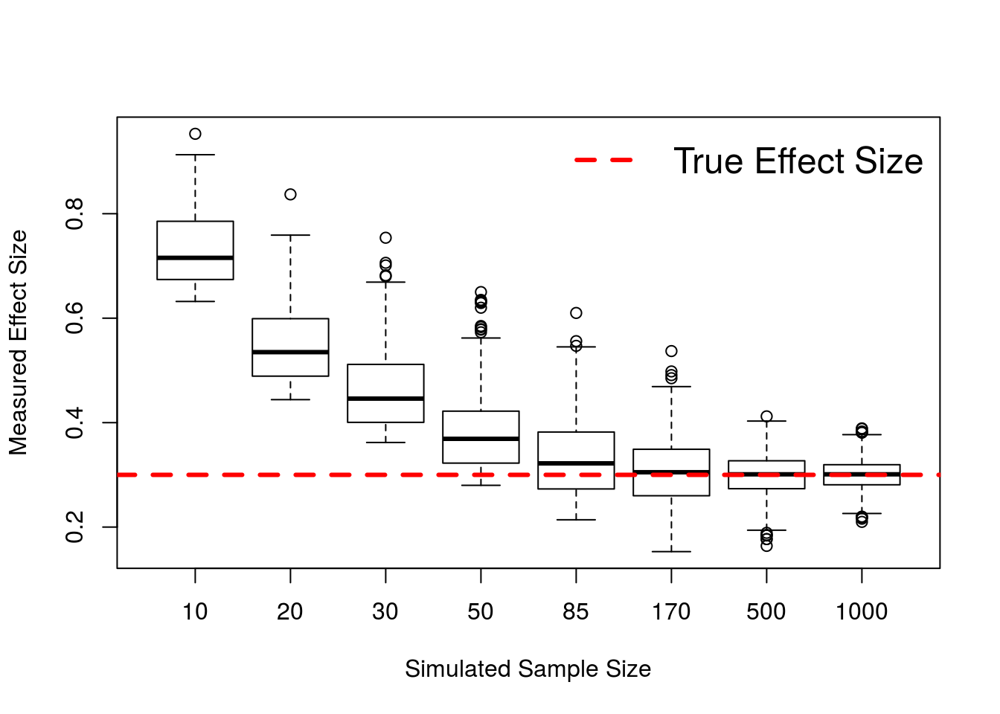
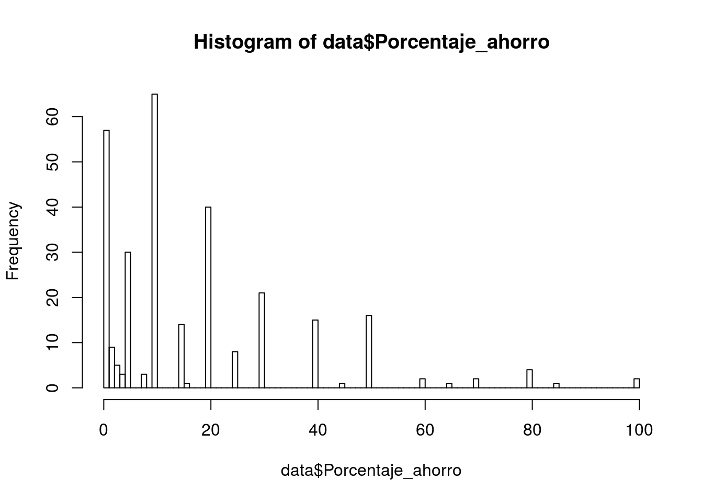

Chapter 16 Experimental design
16.1 Tamaño de muestra y efecto detectado
En esta simulación se muestra como con tamaños de muestra pequeños, se sobreestima el tamaño de efecto real. Como se puede ver en el codigo, solo se muestran los estudios simulados donde la correlacion es significativa. Ver el blog de Jim Grange para una explicación más detallada.
# https://jimgrange.wordpress.com/2017/03/06/low-power-effect-sizes/
#------------------------------------------------------------------------------
rm(list = ls())
set.seed(50)
# function for generating random draws from multivariate distribution
# n = number of draws; p = number of variables
# u = mean of each variable; s = SD of each variable
# corMat = correlation matrix
mvrnorm <- function(n, p, u, s, corMat) {
Z <- matrix(rnorm(n * p), p, n)
t(u + s * t(chol(corMat)) %*% Z)
}
#------------------------------------------------------------------------------
#------------------------------------------------------------------------------
### simulation setup
# declare simulation parameters
means <- c(100, 600)
sds <- c(20, 80)
n_sims = 1000
# declare correlation coefficient & generate cor. matrix
cor <- 0.3
cor_mat <- matrix(c(1, cor,
cor, 1), nrow = 2, ncol = 2, byrow = TRUE)
# sample sizes to simulate
sample_sizes <- c(10, 20, 30, 50, 85, 170, 500, 1000)
# number of simulations
# create variable to store data in
final_data <- matrix(nrow = n_sims, ncol = length(sample_sizes))
colnames(final_data) <- sample_sizes
#------------------------------------------------------------------------------
#------------------------------------------------------------------------------
### simulation execution
for(i in 1:length(sample_sizes)){
for(j in 1:n_sims){
# get the experiment data
sim_data <- mvrnorm(sample_sizes[i], p = 2, u = means, s = sds,
corMat = cor_mat)
# perform the correlation
sim_cor <- cor.test(sim_data[, 1], sim_data[, 2], method = "pearson")
# if the correlation is significant, store the effect size
if(sim_cor$p.value < 0.05){
final_data[j, i] <- as.numeric(round(abs(sim_cor$estimate), 3))
}
}
}
#------------------------------------------------------------------------------
#------------------------------------------------------------------------------
## draw the plot
boxplot(final_data, na.action=na.omit, xlab = "Simulated Sample Size",
ylab = "Measured Effect Size")
abline(h = cor, col = "red", lty = 2, lwd = 3)
legend("topright", "True Effect Size", cex = 1.5, lty = 2, bty="n",
col = "red", lwd = 3)
#------------------------------------------------------------------------------16.2 Power analysis
Tenemos un conjunto de funciones que nos permiten hacer power analysis para distintos tipos de diseños: * pwr.t.test * pwr.t2n.test * pwr.anova.test
En cada uno de ellos podemos modificar varios parámetros. El parámetro que dejemos sin especificar será el que se calculará: * k = groups * n = participants (in each group) * f = effect size * sig.level = sig level * power = power
- Libraries
if (!require('pacman')) install.packages('pacman'); library('pacman')
p_load(pwr, tidyverse)- Code
#T-test
pwr.t.test(n = , d = 0.8, sig.level = 0.05, power = 0.95, type = c("two.sample"))##
## Two-sample t test power calculation
##
## n = 41.59413
## d = 0.8
## sig.level = 0.05
## power = 0.95
## alternative = two.sided
##
## NOTE: n is number in *each* group#T-test
pwr.t2n.test(n1 = 150, n2 = 75, d = , sig.level = 0.05, power = 0.8)##
## t test power calculation
##
## n1 = 150
## n2 = 75
## d = 0.3979226
## sig.level = 0.05
## power = 0.8
## alternative = two.sided#Anova
pwr.anova.test(k = 3, n = , f = .25, sig.level = 0.05, power = .8)##
## Balanced one-way analysis of variance power calculation
##
## k = 3
## n = 52.3966
## f = 0.25
## sig.level = 0.05
## power = 0.8
##
## NOTE: n is number in each group#Effect size that we can detect
pwr.anova.test(k = 6, n = 42, sig.level = 0.05, power = .95)##
## Balanced one-way analysis of variance power calculation
##
## k = 6
## n = 42
## f = 0.283334
## sig.level = 0.05
## power = 0.95
##
## NOTE: n is number in each group#Sample size needed to detect an effect of f=0.5
pwr.anova.test(k = 2, f = 0.5, sig.level = 0.05, power = .95)##
## Balanced one-way analysis of variance power calculation
##
## k = 2
## n = 26.9892
## f = 0.5
## sig.level = 0.05
## power = 0.95
##
## NOTE: n is number in each group16.3 Anonimizar participantes - Encriptar IDs
Libraries
if (!require('pacman')) install.packages('pacman'); library('pacman')
p_load(hashids, tidyverse)16.3.1 Encriptando y desencriptando un elemento
h = hashid_settings(salt = 'this is my salt')
# Numbers to encode
Plain_ID = c(12345678); Plain_ID## [1] 12345678a = encode(Plain_ID, h); a #"BZ9RNV"## [1] "BZ9RNV"decode("BZ9RNV", h) #12345678## [1] 1234567816.3.2 Encriptando y desencriptando la columna RUT de una DB completa.
Generamos aleatoriamente numeros de identificacion “similares” a RUTs, los encriptamos, y despues desencriptamos.
# Cargamos librerias y leemos DB
if (!require('pacman')) install.packages('pacman'); library('pacman')
p_load(hashids, tidyverse)
# Pseudo RUTs generadas aleatoriamente
data = round(runif(100)*10000000) %>% as_tibble() %>%
dplyr::rename(RUT = value)BUG: When building book with Bookdown, it ignores the rowwise() argument!?
h = hashid_settings(salt = 'this is my salt')
# Encriptamos
data = data %>%
dplyr::rowwise() %>%
mutate(RUT_Encripted = encode(RUT, h))
# Desencriptamos
data = data %>%
dplyr::rowwise() %>%
mutate(RUT_Decripted = decode(RUT_Encripted, h))## Warning in if (hash_str == "") stop("decode: invalid hashid"): the
## condition has length > 1 and only the first element will be used# Mostramos los resultados
data %>% select(RUT_Encripted, RUT_Decripted, RUT)## Source: local data frame [100 x 3]
## Groups: <by row>
##
## # A tibble: 100 x 3
## RUT_Encripted
## * <chr>
## 1 kB3YkhnpJ2WCB7aDLh5knmJcN7oetq9xPmIv59o8C53r8tPR7kzcXqoWXCVrPEeTWyNlLuneaXJ
## 2 kB3YkhnpJ2WCB7aDLh5knmJcN7oetq9xPmIv59o8C53r8tPR7kzcXqoWXCVrPEeTWyNlLuneaXJ
## 3 kB3YkhnpJ2WCB7aDLh5knmJcN7oetq9xPmIv59o8C53r8tPR7kzcXqoWXCVrPEeTWyNlLuneaXJ
## 4 kB3YkhnpJ2WCB7aDLh5knmJcN7oetq9xPmIv59o8C53r8tPR7kzcXqoWXCVrPEeTWyNlLuneaXJ
## 5 kB3YkhnpJ2WCB7aDLh5knmJcN7oetq9xPmIv59o8C53r8tPR7kzcXqoWXCVrPEeTWyNlLuneaXJ
## 6 kB3YkhnpJ2WCB7aDLh5knmJcN7oetq9xPmIv59o8C53r8tPR7kzcXqoWXCVrPEeTWyNlLuneaXJ
## 7 kB3YkhnpJ2WCB7aDLh5knmJcN7oetq9xPmIv59o8C53r8tPR7kzcXqoWXCVrPEeTWyNlLuneaXJ
## 8 kB3YkhnpJ2WCB7aDLh5knmJcN7oetq9xPmIv59o8C53r8tPR7kzcXqoWXCVrPEeTWyNlLuneaXJ
## 9 kB3YkhnpJ2WCB7aDLh5knmJcN7oetq9xPmIv59o8C53r8tPR7kzcXqoWXCVrPEeTWyNlLuneaXJ
## 10 kB3YkhnpJ2WCB7aDLh5knmJcN7oetq9xPmIv59o8C53r8tPR7kzcXqoWXCVrPEeTWyNlLuneaXJ
## # ... with 90 more rows, and 2 more variables: RUT_Decripted <dbl>,
## # RUT <dbl>16.4 Match participants
Usaremos la siguiente Base de datos
# Cargamos librerias y leemos DBif (!require('pacman')) install.packages('pacman'); library('pacman')
p_load(optmatch, tidyverse)
# Archivo de data crudos
# RUTs y Edades generadas aleatoriamente
data = read_csv("Data/11-Experimental_design/Match_participants.csv")
head(data)## # A tibble: 6 x 7
## ID RUT Sexo Edad Ocupacion Educacion
## <int> <int> <chr> <int> <chr> <chr>
## 1 1 588006 Mujer 29 ASISTENTE DE TESORERIA Técnica
## 2 2 188576 Mujer 21 Ingeniero Comercial Maestría
## 3 3 206609 Hombre 46 trabajador Técnica
## 4 4 404898 Mujer 52 Psicóloga Maestría
## 5 5 533281 Mujer 63 Controller Postgrados Ejecutivos EN Maestría
## 6 6 60824 Hombre 29 Ingeniro Comercial Maestría
## # ... with 1 more variables: Porcentaje_ahorro <dbl>Preparamos la base de datos
# Umbrales para ahorradores y no ahorradores
Criterio_ahorradores = 20
Criterio_no_ahorradores = 2
# Mostramos histograma
hist(data$Porcentaje_ahorro, breaks = 100)
# Creamos grupos de Ahorradores (0) y No ahorradores (1)
data$Ahorro = ifelse(data$Porcentaje_ahorro <= Criterio_no_ahorradores, 1,
ifelse(data$Porcentaje_ahorro >= Criterio_ahorradores, 0, NA
))
# Cuantos tenemos en cada grupo?
table(data$Ahorro)##
## 0 1
## 113 66#Limpiamos NAs en Ahorro y RUTs duplicados
data = data[complete.cases(data),]
data = data[!duplicated(data$ID),]
#Eliminamos a los Estudiantes
data = data[!grepl("studiante", data$Ocupacion),]
#Recreamos columna ID para los registros que quedan
data$ID = seq(1:nrow(data))Realizamos el matching
TODO: Como evaluamos si el matching es bueno?
#Creamos base de parejas
parejas = as.data.frame((pairmatch(Ahorro ~ Edad + Sexo + Educacion, data = data)))
# caliper establece limites para los matchings
# print(pairmatch(Ahorro ~ Edad + Sexo + Educacion, caliper = 4.9, data = data), grouped = TRUE)
#Como evaluamos si es buena la seleccion?
# summary(lm(Ahorro ~ Edad + Sexo + Educacion, data = data))
#Añadimos columna ID y renombramos columnas
parejas$ID = seq(1:nrow(data))
colnames(parejas) = c("Group", "ID")
#Combinamos ambas bases y limpiamos
datos_combinados = merge(data, parejas, by = "ID")
datos_combinados = datos_combinados[complete.cases(datos_combinados),]
#Ordenamos por Num de grupo y Ahorro
datos_finales = datos_combinados %>% arrange(Group, Ahorro)#Cuantos en cada grupo?
table(datos_finales$Ahorro)##
## 0 1
## 58 58# datos_finales %>% dplyr::select(Edad, Sexo, Educacion, Porcentaje_ahorro)